Supercharging a Black & Decker CHV1568 15.6-Volt DustBuster
Background:
I bought a Black & Decker DustBuster a couple years ago because my wife and I have two dogs and we wanted a convenient way to spot-clean any dog hairs we found. I figure it would also be handy for when I spilled coffee grounds or sugar all over the floor--something I do often enough to justify a hand-held, cordless vacuum cleaner.
Like all DustBusters, this model came with a wall mount and a small charger so that device could be ready to go, always charged, at the first sign of a dust-bunny attack.
My model came with NiCd batteries installed, as I assume all of them do. NiCds have a lot of advantages over other battery chemistries, including less internal resistance (so the can supply large currents), a lower self-discharge rate (last longer unused) and can stand deeper discharges. These types of batteries are also less expensive than lithium polymer or nickel-metal-hydride batteries so they are used in many devices to lower the cost of manufacturing.
The big negative about NiCds, however, is that they suffer from a 'memory effect' where, in some circumstances, NiCds appear to only charge from the point of the last charge cycle. So, over time, they appear to have markedly less capacity.
That is what happened to my DustBuster so that about after a year of owning it, I couldn't use it for more than a few minutes without it running out of power.
I looked around for a replacement battery pack and discovered that you can't buy one. They sell replacement filters, nozzles and attachments but not battery packs.
Rather than buy a new DustBuster, I decided to replace the internal batteries with NiMH (Nickel-Metal-Hydride) batteries which don't suffer from the memory effect and have at least twice as much charge density.
GreenBatteries.com has a great FAQ about different battery chemistries and how different types of charging styles affect the life of those batteries.
Charging Math:
The NiCds that came with the DustBuster have a new cell capacity of 1500mAh (milliamp hours) and the wall charger which came with the vacuum charges at about a rate of around 100-150 mA (milliamps). Using a charging calculator, which factors in electrical inefficiencies, gives us around an 18-hour charge (which happens to be what Black & Decker recommends for the initial charge before using).
I wanted greater capacity, but I also didn't want to use a different charger other than the one which came with the vacuum, and I didn't want to extend my charge time to 5 days. So, while I had my choice of battery capacity, I settled on 3300mAh NiMH cells. They would have extended capacity and wouldn't be damaged by a little over-charging after the initial 30-36 hours for the first charge.
What you'll need:
- 13 3300mAh 1.2V sub-C NiMH rechargeable batteries (with tabs)
- The DustBuster battery compartment has room for 13 1.2V sub-C sized cells, which is a standard size somewhere between a C and a AA. It's a popular cell used a lot for radio controlled models. I bought my original NiMH batteries from a website that is no longer in business. I have since bought a great set of replacement cells from Amazon.
- NOTE: I bought the cells with metal tabs attached to the positive and negative terminals because I knew they would make soldering much easier. Unless you have metal strips to attach the cells and are very good at soldering, I suggest you get your cells with tabs as well.
- A 40W (or higher) soldering iron.
- Don't try to do the soldering with a small iron (15W and 25W the most popular other sizes). The batteries act as giant heat sinks and you won't be able to heat the surface enough to properly solder using anything less than a 40W iron. (I've never used this model, but Radio Shack has an adjustable wattage soldering iron)
- Rosin Core Solder
- I find that thin solder melts more readily. It's often called 'light duty' but it's no different from thicker solder. (I use this 60/40 tin/lead solder from Radio Shack. Make sure to ventilate when you use it)
- Hook up wire
- You'll need about 2" of either solid core or braided wire to attach two of the pack's center batteries. (I use this 22ga wire from Radio Shack)
- Tape
- I found that using clear tape was helpful in holding the batteries together for soldering and grouping together in the final pack. You could use any thin tape like cellophane or masking tape.
How to do it:
The basic steps are:
- Take apart the DustBuster.
- Disconnect and remove the battery pack.
- Solder together new cells to match the configuration of the original battery pack.
- Place the new cell in the battery pack housing and put everything back together.
Steps in detail:
- Take apart the DustBuster.
- Here's the vacuum on its side, without the nozzle and filter set. There are 7 screws that hold it together. Keep in mind that the screw in the hanging hook is smaller than the other 6 screws.
 View full-size image
View full-size image- Remove all attachments and pull back the sticker in the attachments well.
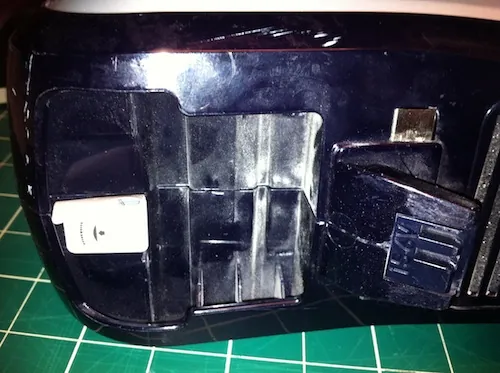
- Here's what the vacuum looks like with one side removed.
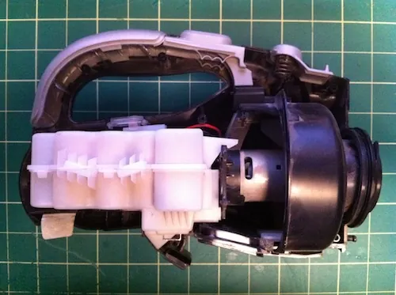
- Now remove the filter underneath, the charging LED cover, the power switch, handle cover and nozzle latch. NOTE: Be careful when removing the power switch as you could turn on the vacuum and cut your hand and/or fingers.
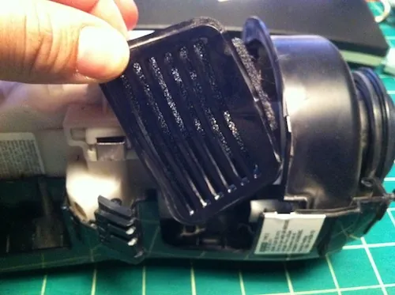
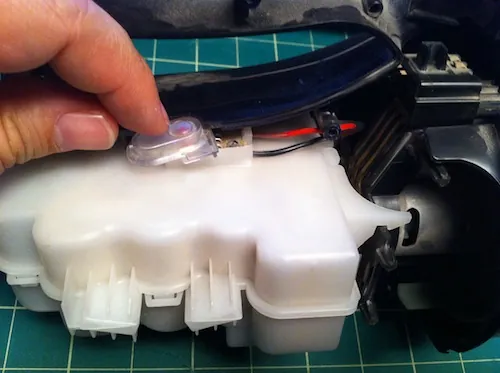
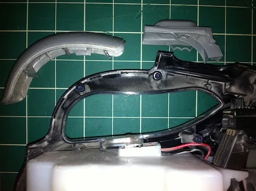
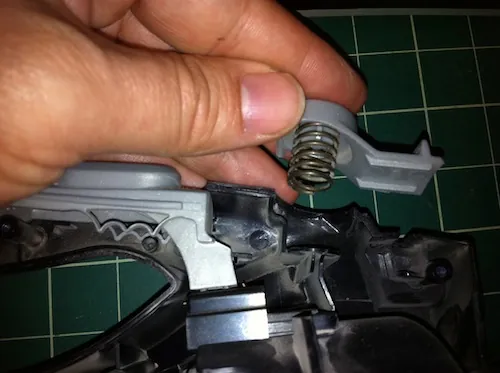
- Next, remove the fan and motor housing along with the battery pack. I had to pull the front disc away from the fan housing with quite a bit of force to get this to work.
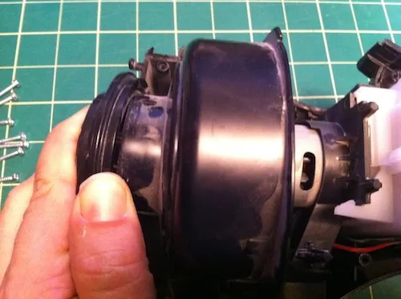
- Here's the fan/motor housing and battery pack separated from the vaccum's outer casing.
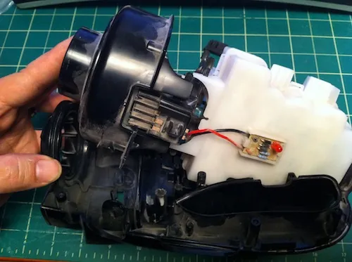
The white battery pack clips onto the motor and fan housing, forming one unit.
- Unclip the motor/fan housing from the battery pack and disconnect the power cables from the motor.
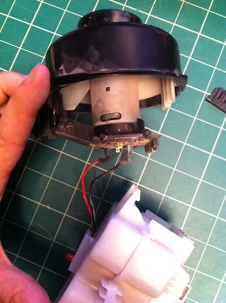
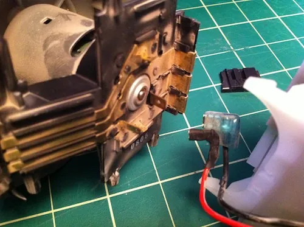
Positive and negative leads disconnected from the motor.
- Take apart the battery pack.
- Open the battery pack, remove the batteries and cut the wires going to the positive and negative charging pads that are connected to the front two batteries.
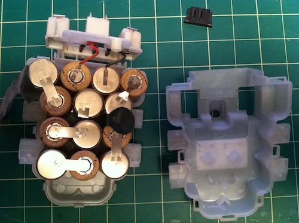
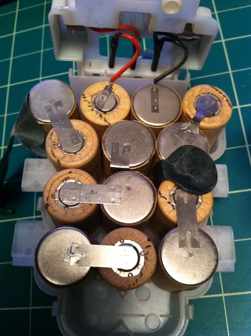
13 cells connected to form the original battery pack.
- Rebuild the battery pack.
- This is the hardest part of the project, as you probably guessed. WARNING: Because these batteries have metal tabs, it's very easy to short-circuit them (touch negative to positive, closing a circuit). If you short-circuit the batteries you could burn yourself, cause a fire or possibly an explosion. Be very careful when handling the batteries and think about where the metal tabs are going and what they're touching.
- You'll notice that the battery pack is just a big chain of 13 batteries connected positive to negative back and forth ending with the two batteries at the top of the picture above. The charging connectors are attached to these two final batteries. The red lead goes to positive and the black to negative.
- You will want to duplicate the back and forth nature of the battery pack with your own cells, using the tabs to solder the batteries together.
- I tried a few strategies, but the best for me was to cut the tabs on the negative side of the cells so that they were flush with the side of the battery, but leave the top tab (positive side) uncut. Here is the bottom of a cell showing how I cut the tab. Next to it is another cell showing the untouched insulated positive side tab.
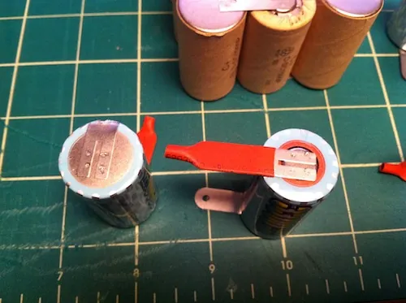
- Soldering Tip: What worked best for me, after trial and error, was to place the batteries side by side so that the positive lead of one battery sat as flush as possible to the negative side of the battery I wanted to solder. Then I made as much contact with the soldering gun tip and the edge of the positive lead. When I thought it was hot enough to met the solder (around 5-10 seconds in my case) I touched the solder to the edge of the positive lead. What I wanted was to have the solder melt and slip underneath the positive tab, filling the space between the tab and the negative side of the battery with molten solder.
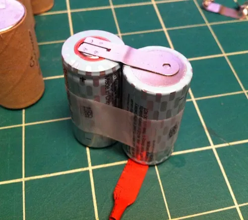
 View full-size image
View full-size image- Build your battery pack by grouping batteries in 2, 3's and 4's using tape to secure them together. The tape will help you steady them while you solder.
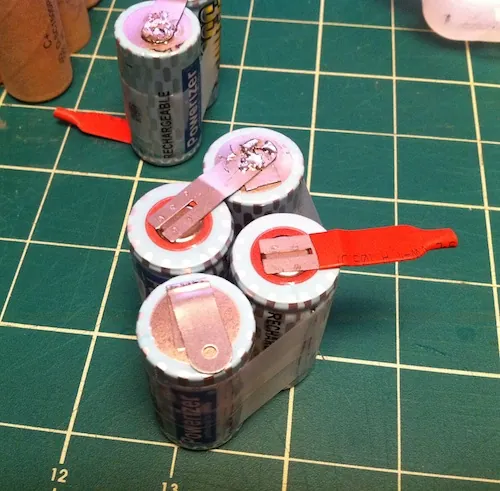
- Plan ahead and lay out the groups of batteries to make sure they match the original battery pack. Do not remove the insulating sleeves on the positive terminals until you're ready to solder. REMEMBER: Be careful of short circuits.
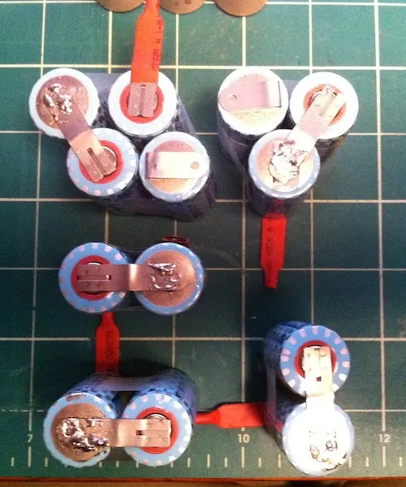
- You will need to connect the two middle batteries using a piece of hookup wire. Notice that I trimmed away just a bit of the insulation to allow me to solder one end of the hookup wire.
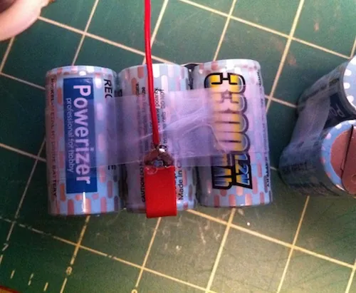
- Almost done: Battery pack showing all batteries in place, including the connection between the two center batteries.
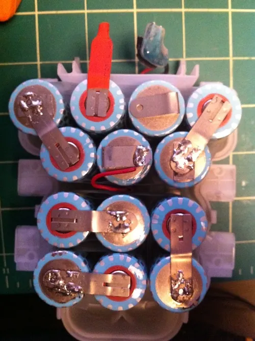
- Check the connections: During soldering and assembly, I used a multimeter to verify that my solders were good and that current was flowing between cells. Here is my final check on the voltage of all 13 cells (13 x 1.2v = 15.6).
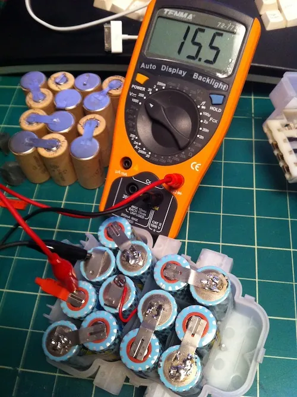
- Final soldering: Re-attach the charging plate leads to the last two unconnected batteries in the chain. Red wire goes to the positive battery tab and the black wire goes to the negative tab. Notice that rather than cut the tabs, I just folded them over to make soldering the final charging wires easier.
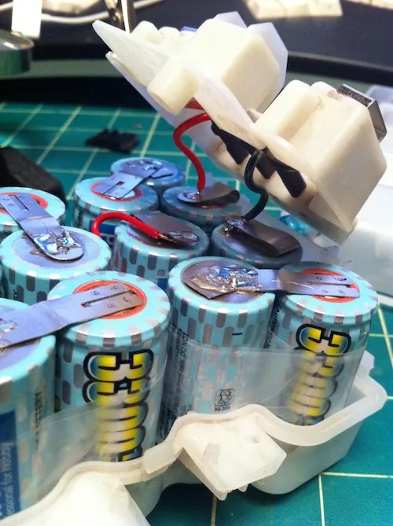
- Re-assemble the DustBuster.
Final Notes:
It will take around 24 hours to fully charge the new NiMH cells. If you don't use your DustBuster very often, leave it plugged in for 24 hours every 4 weeks to top off the batteries. It's probably a good idea not to leave the cells charging all the time, as a trickle charge may damage the batteries.
22 comments
Comments are closed. These were left on the previous version of this site. Questions? Get in touch.
I guess my biggest concern about switching battery types is the tendency for other members to just leave the DB in the charger after every use. I guess I could unplug it as a safeguard. On the other hand going through the process of building another NiCD pack to have it eventually suffer the same short run problem is pushing me in this direction.
So far the Dustbuster is doing very well with the new battery pack. I haven't noticed a decrease in capacity, nor have I ever run out of charge mid-use, despite using it 3-4 times a week. I'm glad I didn't use NiCDs again, because even when the DB was new, it didn't run for very long before needing a recharge.
Even though we keep the DB in its hanging station, the station itself isn't plugged in all the time to avoid the very issue that you allude to: overcharging damage.
However, I have other devices with NiMh batteries (an older Logitech wireless mouse, for example) which are plugged in all the time and don't seem to have suffered any ill effects. So, my monthly charging regimen might be unnecessary and overly cautious of me, but I also know it won't hurt.
About once a month I plug in the base station (using the charger that came with the DB) and let the DustBuster charge for 12-24 hours. I just guess at how much charge I need based on how much I've used the DustBuster, but NiMh's are forgiving to overcharging, especially at low voltages. I'm quite happy with the updated batteries.
great photos and step-by-step instructions. I found it easier to use the white plastic shell to hold the batteries in place while I soldered. I did one entire side. placed the other side of the plastic shell; flipped them all over, removed the first plastic shell. IT was super easy this way.
I thought about using the white plastic shell like that as well, but was paranoid that I'd make the wrong connection somewhere and cause a short circuit.
Seeing how that technique worked for you, though, makes me think I should've just gone for it. :-)
Best wishes!
http://www.all-battery.com/subcscsizeseriesni-mhrechargeablebatteries.aspx
Thanks and great tutorial by the way.
Cheers
It looks like they don't make the 3300mAh cells anymore (or at least all-battery.com doesn't sell them anymore). They've all been replaced by 3800mAh cells.
The good news is that you can use those higher capacity cells without a problem. The only thing that you'll have to keep in mind is that charging them fully will take even longer than it does on my 3300mAh version.
When I just checked on all-battery.com, they do have cells with tabs. Strictly speaking, you don't need the tabs, as you can use wire to connect the cells, but they do make the process easier.
NOTE: be very careful of short circuits... The soldering may remove some needed plastic. Even one battery may cause a fire...
Also, I had to remove some bits of plastic on the main housing since my battery housing did not want to close properly any longer, and did not want to go in all the way.
Thanks again.
Nice work. Once you charge these batteries , how long the dust buster works ? more than 1 hr or so ?
Thanks,
Richi
I'd say the batteries last about 20 to 30 minutes, though I haven't done a thorough test of run time. With the new batteries, the DB definitely runs longer than it did using the NiCd batteries, which on a good day was around 5-10 minutes.
Very impressive idea. Glad to know about this thing. I have tried this method for BLACK + DECKER CHV1410L Cordless Dustbuster Hand Vac. This takes 30 hours to full charge and get discharged in 6 hours.
Thanks for the tutorial. I just rebuilt mine and it's regained its power! In fact, I didn't realize just how powerful it could be for a handheld vacuum. (I found a 16-pack of "Ultracell" NiMH 3300 mAH Sub-C cells with solder tabs on eBay for about $33, free shipping.)
I got my batteries direct from China through Ali Baba. $10. Worked great.
FYI...I've used the dustbuster about every other day for a few minutes. It's still hasn't required a recharge or is even showing any signs of slowing down. Thanks again for the guide. For others about to embark on this project, the toughest part for me was getting everything back together after sliding the new battery pack back in. Take a picture of the innards when you first get to the point where you are sliding the existing battery pack out. There are particular places where the wires have to run for the unit to close tightly. It took me five tries, but patience sure has paid off. Unit is better than brand new and repair cost me $10 in supplies.
Thank you for the tutorial Federico.
I used 13 batteries just like you and forgot to check with the multimeter as I was soldering.
Then when I finished and turned on my dust buster it was working on very high rotation, like never before! Then I checked the voltage with the multimeter and it was 16.9V! The batteries are the ones you recommended from Amazon. What could have happened?
I removed one battery and the voltage became 15.6V.
Senor Frederico, thank you for your post, and detailed explanation of disassembly. In fact, the model in the display is the exact one that I carry. I have ordered the batteriies on ebay, 16 pack of ULTRACELL 3300 mAH @ $38.93 as on date. Looking forward to reassembly after receiving the replacement batteries.
Regards and Good Luck